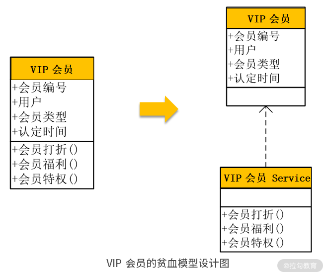
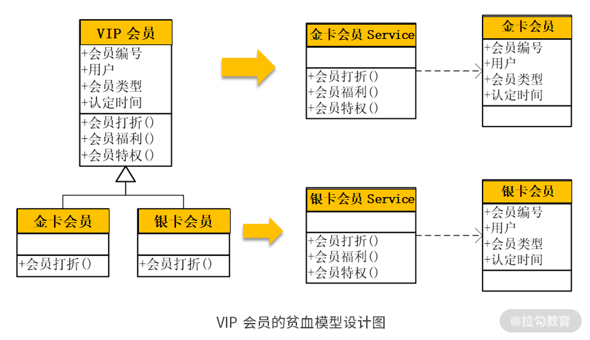
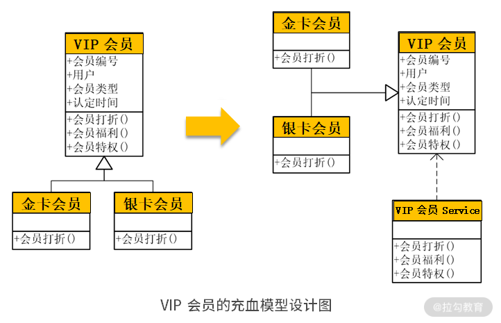
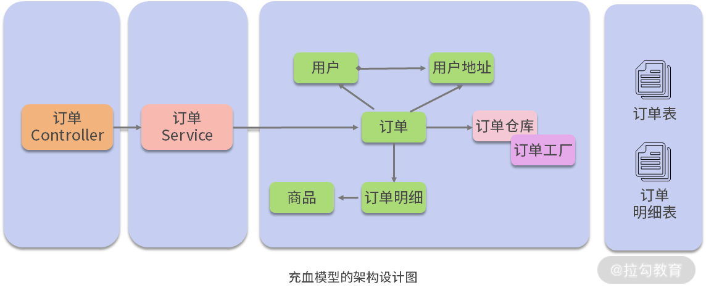
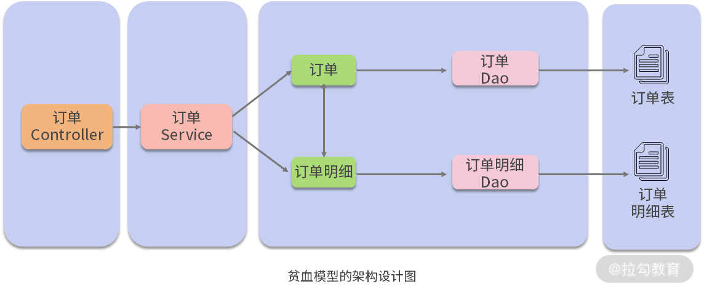
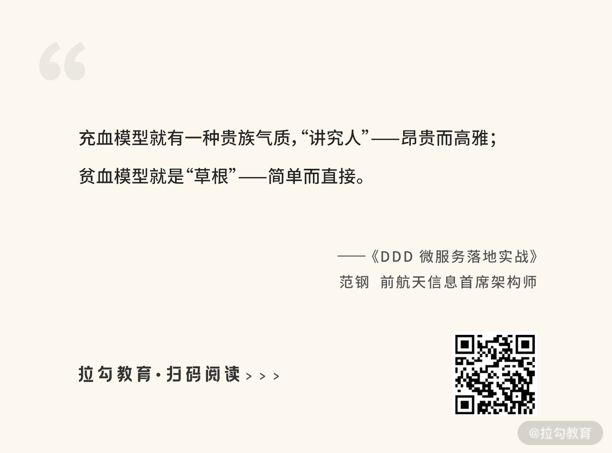
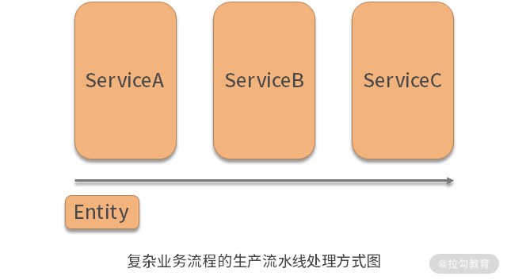

- 00 开篇词 让我们把 DDD 的思想真正落地.md.html
- 01 DDD ：杜绝软件退化的利器.md.html
- 02 以电商支付功能为例演练 DDD.md.html
- 03 DDD 是如何落地到数据库设计的？.md.html
- 04 领域模型是如何指导程序设计的？.md.html
- 05 聚合、仓库与工厂：傻傻分不清楚.md.html
- 06 限界上下文：冲破微服务设计困局的利器.md.html
- 07 在线订餐场景中是如何开事件风暴会议的？.md.html
- 08 DDD 是如何解决微服务拆分难题的？.md.html
- 09 DDD 是如何落地微服务设计实现的？.md.html
- 10 微服务落地的技术实践.md.html
- 11 解决技术改造困局的钥匙：整洁架构.md.html
- 12 如何设计支持快速交付的技术中台战略？.md.html
- 13 如何实现支持快速交付的技术中台设计？.md.html
- 14 如何设计支持 DDD 的技术中台？.md.html
- 15 如何设计支持微服务的技术中台？.md.html
- 16 基于 DDD 的代码设计演示（含 DDD 的技术中台设计）.md.html
- 17 基于 DDD 的微服务设计演示（含支持微服务的 DDD 技术中台设计）.md.html
- 18 基于事件溯源的设计开发.md.html
04 领域模型是如何指导程序设计的？
基于 DDD 的程序设计，就是将前面设计的领域模型，映射成数据架构中的程序设计，从而通过领域驱动提高软件设计质量。那么，应当怎样进行映射，让领域模型指导程序设计呢？要将领域模型映射到程序设计，最终都会落实到 3 种类型的对象设计：服务、实体和值对象。
服务、实体与值对象
建领域模型的第一步就是需要区分出服务、实体与值对象。
服务（Service）
服务，标识的是那些在领域对象之外的操作与行为。 在 DDD 中，“服务”通常承担了两种类型的职责：接收用户的请求和执行某些操作。当用户在系统界面中进行一些操作时，就会向系统发送请求。这时，是由“服务”首先去接收用户的这些请求，然后再根据需求去执行相应的方法。在执行这些方法的过程中，“服务”会去操作相应的实体与值对象。最后，当所有操作都完成以后，再将实体或值对象中的数据持久化到数据库中。
譬如，当用户需要下单的时候，就会从前端发起一个“下单”请求。该请求被“订单”Service 接收到，并执行下单的相应操作。在执行过程中，“订单”Service 会对“订单”实体中的数据进行校验，完成各种数据操作，最后将其保存到数据库中。
实体（Entity）
实体，就是那些通过一个唯一标识字段来区分真实世界中的每一个个体的领域对象。例如，在学籍管理系统中的“学员”对象就是一个实体，它通过标识字段“学员编号”将每一个学员进行了区分，通过某个学员编号就能唯一地标识某个学员；并且，这个学员有许多属性，如姓名、性别、年龄等，这些属性也是随着时间不断变化。这样的设计就叫作“实体”。
值对象
值对象，代表的是真实世界中那些一成不变的、本质性的事物，这样的领域对象叫作 “值对象”，如地理位置、行政区划、币种、行业、职位等。
实体和值对象的区分
在 DDD 中，对实体与值对象进行了严格的区分。可变性是实体的特点，而不变性则是值对象的本质。例如，北京是一个城市，架构师是一个职务，人民币是一个币种，这些事物的特性是永远不变的。
在实际项目中，我们可以根据业务需求的不同，灵活选用实体还是值对象。比如，在线订餐系统中，根据业务需求的不同，菜单既可以设计成实体，也可以设计成值对象。例如，“宫保鸡丁”是一个菜品，如果将其按照值对象设计，则整个系统中“宫保鸡丁”只有一条记录，所有饭店的菜单如果有这道菜，都是引用的这条记录；如果按照实体进行设计，则是认为每个饭店的“宫保鸡丁”都是不同的，比如每个饭店的“宫保鸡丁”的价格都是不尽相同的。因此，将其设计成有多条记录、有各自不同的 ID，每个饭店都是使用自己的“宫保鸡丁”。
贫血模型 vs 充血模型
服务、实体与值对象是领域驱动设计的基本元素。然而，要将业务领域模型最终转换为程序设计，还要加入相应的设计。通常，将业务领域模型转换为程序设计，有两种设计思路：贫血模型与充血模型。
贫血模型与充血模型
事情是这样的：2004 年，软件大师 Eric Evans 发表了他的不朽著作《领域驱动设计》。虽然已经过去十多年了，这本书直到今天依然对我们有相当大的帮助。接着，另一位软件大师 Martin Fowler 在自己的博客中提出了“贫血模型”的概念。这位“马大叔”有一个非常大的特点，那就是软件行业中各种名词都是他发明的，包括如今业界影响巨大的软件重构、微服务，也是他的杰作。然而，马大叔在提出“贫血模型”的时候，却将其作为反模式提出来批评：所谓的“贫血模型”，就是在软件设计中，有很多的 POJO（Plain Ordinary Java Object）对象，它们除了有一堆 get/set 方法，几乎没有任何业务逻辑。这样的设计被称为“贫血模型”。

如上图所示，在领域模型中有 VIP 会员的领域对象，该对象除了有一堆属性以外，还有“会员打折”“会员福利”“会员特权”等方法。如果将该领域模型按照贫血模型进行设计，就会设计一个 VIP 会员的实体对象与 Service，实体对象包含该对象的所有属性，以及这些属性包含的数据；然后，将所有的方法都放入 Service 中，在调用它们的时候，必须将领域对象作为参数进行传输。这样的设计，将领域对象中的这些方法，以及这些方法在执行过程中所需的数据，割裂到两个不同的对象中，打破了对象的封装性。它会带来什么问题呢？

如上图所示，在领域模型中的 VIP 会员通过继承分为了“金卡会员”与“银卡会员”。如果将该领域模型按照贫血模型进行设计，则会设计出一个“金卡会员”的实体对象与 Service，同时设计出一个“银卡会员”的实体对象与 Service。“金卡会员”的实体对象应当调用“金卡会员”的 Service，如果将“金卡会员”的实体对象去调用了“银卡会员”的 Service，系统就会出错。所以，除了进行以上设计以外，还需要有一个客户程序去判断，当前的实体对象是“金卡会员”还是“银卡会员”？这时，系统变更就变得没有那么灵活了。
比如，现在需要在原有基础上，再增加一个“铂金会员”，那么不仅要增加一个“铂金会员”的实体对象与 Service，还要修改客户程序的判断，系统变更成本就会提高。

针对贫血模型的问题，马大叔提出了“充血模型”的概念。所谓“充血模型”，就是将领域模型的原貌直接转换为程序中领域对象的设计。这时，各种业务操作就不再在“服务”中实现了，而是在领域对象中实现。如图所示，在程序设计时，既有父类的“VIP 会员”，又有子类“金卡会员”与“银卡会员”。
但充血模型与贫血模型不同的是：
- 那些在领域对象中的方法也同样保留到了程序设计的实体对象中，这样，通过继承，虽然“金卡会员”与“银卡会员”都有“会员打折”，但“金卡会员”的“会员打折”与“银卡会员”的“会员打折”是不一样的；
- 虽然在充血模型中也有 Service，里面也有“会员打折”“会员福利”“会员特权”等方法，但是充血模型的 Service 只干一件非常简单的事，那就是接收到用户的请求后，就直接去调用实体对象中的相应方法，其他的什么都不干。
这样，“VIP 会员”Service 不需要去关注现在调用的是“金卡会员”还是“银卡会员”，它只需要去调用“会员打折”就行了：
- 如果当前拿到的是“金卡会员”，就是执行“金卡会员”的“会员打折”；
- 如果当前拿到的是“银卡会员”，就是执行“银卡会员”的“会员打折”；
- 如果要再增加一个“铂金会员”，就只需要写一个“铂金会员”的子类，重写“会员打折”方法，而“VIP 会员”Service 不需要做任何修改，变更的维护成本就大大降低了。
两种设计思路的优劣比较
采用充血模型的设计，有诸多的好处：
- 它保持了领域模型的原貌，领域模型什么样，就直接转换成程序的设计，这样，当领域模型在随着业务变更而频繁甚至大幅度调整时，可以比较直接地映射成程序的变更，代码修改起来比较直接；
- 如以上案例所述，充血模型保持了对象的封装性，使得领域模型在面临多态、继承等复杂结构时，易于变更。
充血模型在理论上非常优雅，然而在工程实践上却不尽人意。而贫血模型虽然从表面上看简单粗暴，但在工程实践上依然有许多优异的特性，主要体现在以下 3 个方面。
1. 贫血模型比充血模型更加简单易行
充血模型是将领域模型的原貌直接映射成了程序设计，因此在程序设计时需要增加更多的诸如仓库、工厂的组件，对设计能力与架构提出了更高的要求。
譬如，现在要设计一个订单系统，在领域建模时，每个订单需要有多个订单明细，还要对应相关的客户信息、商品信息。因此，在装载一个订单时，需要同时查出它的订单明细，以及对应的客户信息、商品信息，这些需要有强大的订单工厂进行装配；装载订单以后，还需要放到仓库中进行缓存，需要订单仓库具备缓存的能力；此外，在保存订单的时候，还需要同时保存订单和订单明细，并将它们放到一个事务中。所有这些都需要强有力的技术平台的支持。

相反，贫血模型就显得更加贫民化。在贫血模型中，MVC 层直接调用 Service，Service 通过DAO进行数据访问。在这个过程中，每个 DAO 都只查询数据库中的某个表，然后直接交给 Service 去使用，去完成各种处理。
以订单系统为例，订单有订单 DAO，负责查询订单；订单明细有订单明细 DAO，负责查询订单明细。它们查询出来以后，不需要装配，而是直接交给订单 Service 使用。在保存订单时，订单 DAO 负责保存订单，订单明细 DAO 负责保存订单明细。它们都是通过订单 Service 进行组织，并建立事务。贫血模型不需要仓库，不需要工厂，也不需要缓存，一切都显得那么简单粗暴但一目了然。

2. 充血模型需要具备更强的设计与协作能力
充血模型的设计实现给开发人员提出了更高的能力要求，需要具有更强的 OOA/D（面向对象分析/设计） 能力、分析业务、业务建模与设计能力。譬如，在订单系统这个案例中，开发人员要先进行领域建模，分析清楚该场景中的订单、订单明细、用户、商品等领域对象的关联关系；还要分析各个领域对象在真实世界中都有什么行为，对应到软件设计中都有什么方法，在此基础上再进行设计开发。
同时，充血模型需要有较强的团队协作能力。比如，在该场景中，当订单在进行创建时，需要对用户以及用户地址的相关信息进行查询。此时，订单 Service 不能直接去查询用户和用户地址的相关表，而是去调用用户 Service 的相关接口，由用户 Service 去完成对用户相关表的查询。这时候，开发订单模块的团队，需要向开发用户模块的团队提出接口需求。
与充血模型相比，贫血模型就比较简单与直接。所有业务处理过程都交给 Service 去完成。在业务处理过程中，需要哪些表的数据，就去调用相应的 DAO：需要订单就找订单 DAO；需要用户就找用户 DAO；需要商品就找商品 DAO。程序简单就易于理解，日后维护起来也比较容易。总之，充血模型就有一种贵族气质，“讲究人”——昂贵而高雅；贫血模型就是“草根”——简单而直接。

3. 贫血模型更容易应对复杂的业务处理场景
充血模型在进行设计时，是将所有的业务处理过程在领域对象的相应方法中实现的。这样的设计，如果业务处理过程比较简单，还可以从容应对；但如果是面对非常复杂的业务处理场景时，就有一些力不从心。在这些复杂的业务处理场景中，如果采用贫血模型，可以将复杂的业务处理场景，划分成多个相对独立的步骤；然后将这些独立的步骤分配给多个 Service 串联起来执行。这样，各个步骤就是以一种松耦合的形式串联地组织在一起，以领域对象作为参数在各个Service 中进行传递。

在这样的设计中，领域对象既可以作为各个方法调用的输入，又可以作为它们的输出。比如，在上图的案例中，领域对象作为参数首先调用 ServiceA；调用完以后将结果数据写入领域对象的前 5 个字段，传递给 ServiceB；ServiceB 拿到领域对象以后，既可以作为输入去读取前 5 个字段，又可以作为输出将执行结果写入中间 5 个字段；最后，将领域对象传递给 ServiceC，执行完操作以后去写后面 5 个字段；当所有字段都写入完成以后，存入数据库，完成所有操作。
在这个过程中，如果日后需要变更，要增加一个处理过程，或者去掉一个处理过程，再或者调整它们的执行顺序，都是比较容易的。这样的设计要求处理过程必须在领域对象之外，在 Service 中实现。然而，如果采用的是充血模型的设计，就必须要将所有的处理过程都写入这个领域对象中去实现，无论这些处理过程有多复杂。这样的设计势必会加大日后变更维护的成本。
所以，不论是贫血模型还是充血模型，它们各有优缺点，到底应当采用贫血模型还是充血模型，争执了这么多年，但我认为它们并不是熊掌和鱼的关系，我们应当把它们结合起来，取长补短，合理利用。关键是要先弄清楚它们的差别，也就是业务逻辑应当在哪里实现：贫血模型的业务逻辑在 Service 中实现，但充血模型是在领域对象中实现。清楚了这一点，在今后的软件设计时，可以将那些需要封装的业务逻辑放到领域对象中，按照充血模型去设计；除此之外的其他业务逻辑放到 Service 中，按照贫血模型去设计。
那么，哪些业务逻辑需要封装起来按照充血模型设计呢？这个仁者见仁智者见智，我总结了以下几个方面的内容。
- 如前所述，如果在领域模型中出现了类似继承、多态的情况，则应当将继承与多态的部分以充血模型的形式在领域对象中实现。
- 如果在软件设计的过程中需要将一些类型或者编码进行转换，则将转换的部分封装在领域对象中。例如，一些布尔类型的字段，在数据库中是没有布尔类型的，不同的人习惯不同，有的人习惯采用 0 和 1，有的人习惯用 Y 和 N，或者 T 和 F，这样就会给上层开发人员诸多的困惑，到底哪些字段是 Y 和 N，哪些是 T 和 F。这时就可以将它们封装在领域对象中，然后转换为布尔类型展现给上层开发，按充血模型来设计。
- 希望在软件设计中能更好地表现领域对象之间的关系。比如，在查询订单的时候想要显示每个订单对应的用户，以及每个订单包含的订单明细。这时，除了要将领域模型中的关系体现在领域对象的设计外，还需要有仓库与工厂的支持。如装载订单时需要同时查询订单和订单明细，并通过订单工厂装配；查询订单以后需要通过工厂补填相应的用户与明细。
- 最后一种情况被称为“聚合”，也就是在真实世界中那些代表整体与部分的事物。比如，在订单中有订单和订单明细，一个订单对应多个订单明细。从业务关系来说，它们是整体与部分的关系，订单明细是订单的一个部分，没有了这张订单，它的订单明细就没有任何意义了。这时，我们在操作订单的时候，就应当将对订单明细的操作封装在订单对象中，按照充血模型的形式进行设计。
总结
本讲讲解了基于 DDD 的程序设计，领域模型分析只是软件需求分析的中间过程，它最终需要落地到程序设计。领域模型的最终落地是三种类型的对象：服务、实体与值对象，而设计思路有两种：贫血模型与充血模型。通过这样的落地，领域模型就能很好地指导程序开发，提高设计质量。
在 DDD 落地的过程中，不必过于纠结到底是实体还是值对象，应当将更多的精力集中于对业务的分析与理解。同时，将贫血模型与充血模型结合起来，取长补短、合理编码。
然而，领域模型的落地还有诸多难题需要解决。因此，下一讲将进一步讲解 DDD 的聚合、仓库与工厂及其设计思路。